Chapter 9: Inference for Two-Way Tables
Expanded from Statistics_Chapter9_Inference_for_Two-Way_Tables.pdf (11 pages)
1. Two-Way Tables ($r \times c$) & Describing Categorical Relationships
In Chapter 8, we summarized the "No Sweat" garment label survey (Examples 9.1 & 9.2) by listing the sample size $n$ and the count $X$ of "label users" in each gender. A two-way contingency table reorganizes those same counts by recording the counts of all outcomes (both "Yes" and "No") across rows and columns:
| Label User (Response) | Women (Column 1) | Men (Column 2) | Row Total |
|---|---|---|---|
| Yes | $63$ | $27$ | $90$ |
| No | $233$ | $224$ | $457$ |
| Column Total | $296$ | $251$ | $547$ |
Notice the structural convention used above: because we want to study how gender (the explanatory variable) influences label use (the response variable), we place the explanatory variable in the columns (like the horizontal $x$-axis in regression) and the response variable in the rows (like the vertical $y$-axis). While the two-sample $z$ test is limited to comparing two groups on a binary outcome (a $2 \times 2$ table), a two-way table with $r$ rows and $c$ columns ($r \times c$ cells) generalizes seamlessly to variables with three or more categories.
Case 9.1 (Examples 9.3 & 9.4): Exclusive Territories and Franchise Success
When an entrepreneur opens a franchise outlet (such as McDonald's or Ace Hardware), the franchise contract may or may not grant an exclusive territory (guaranteeing that no competing outlet of the same chain will open nearby). A study tracked a sample of $n = 170$ new franchise firms and classified each firm by two categorical variables: whether it was granted an Exclusive Territory (Column variable: Yes or No) and whether the franchise was a Success (Row variable: Yes or No, based on whether it was still operating as a franchise as of a fixed date):
| Success (Response) | Exclusive Territory: Yes | Exclusive Territory: No | Row Total |
|---|---|---|---|
| Yes (Successful) | $108$ ($76.1\%$ of col) | $15$ ($53.6\%$ of col) | $123$ ($72.4\%$) |
| No (Failed) | $34$ ($23.9\%$ of col) | $13$ ($46.4\%$ of col) | $47$ ($27.6\%$) |
| Column Total | $142$ ($100\%$) | $28$ ($100\%$) | $170$ ($100\%$) |
Joint Distribution vs. Conditional Distributions in a Two-Way Table
Every cell count in an $r \times c$ table can be converted into a percentage in three ways depending on the denominator:
- Percent of Grand Total $n$ (Joint Distribution): Divides the cell count by the grand total $n = 170$, giving the joint probability of both events occurring together, e.g., $$P(\text{Success} = \text{Yes} \text{ and } \text{Exclusive} = \text{No}) = \frac{15}{170} = 8.82\%$$
- Percent of Column Total (Conditional Distribution Given Column): Divides each cell count by its column total, giving the conditional distribution of the response variable for each group of the explanatory variable: $$P(\text{Success} = \text{Yes} \mid \text{Exclusive} = \text{Yes}) = \frac{108}{142} = 76.06\% \approx 76\%$$ $$P(\text{Success} = \text{Yes} \mid \text{Exclusive} = \text{No}) = \frac{15}{28} = 53.57\% \approx 54\%$$
- Percent of Row Total (Conditional Distribution Given Row): Divides each cell count by its row total, e.g., $P(\text{Exclusive} = \text{Yes} \mid \text{Success} = \text{Yes}) = \frac{108}{123} = 87.80\%$.
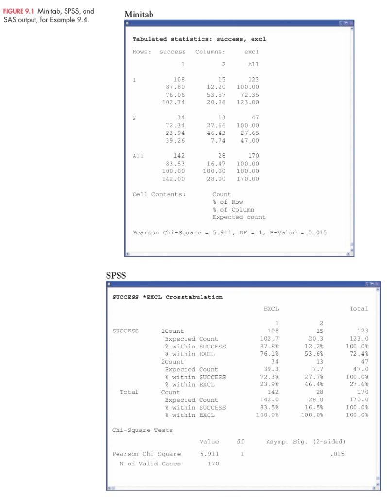
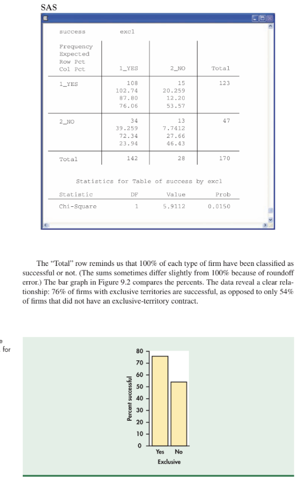
View Original Handwritten Notes — Pages 1 & 2 (Two-Way Tables & Joint vs. Conditional Distributions)
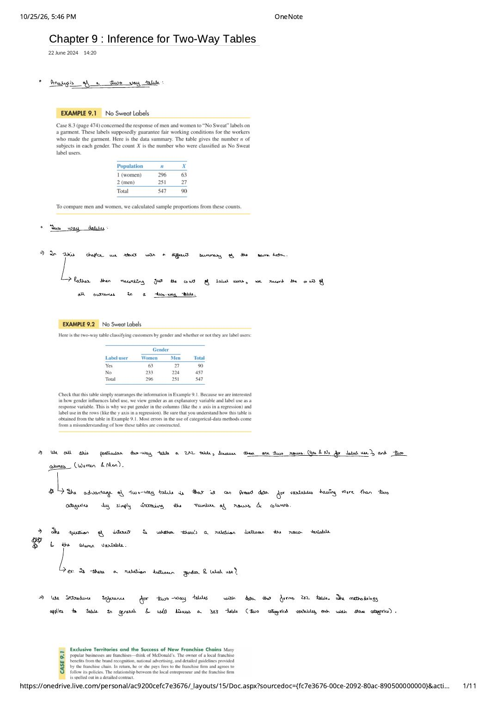
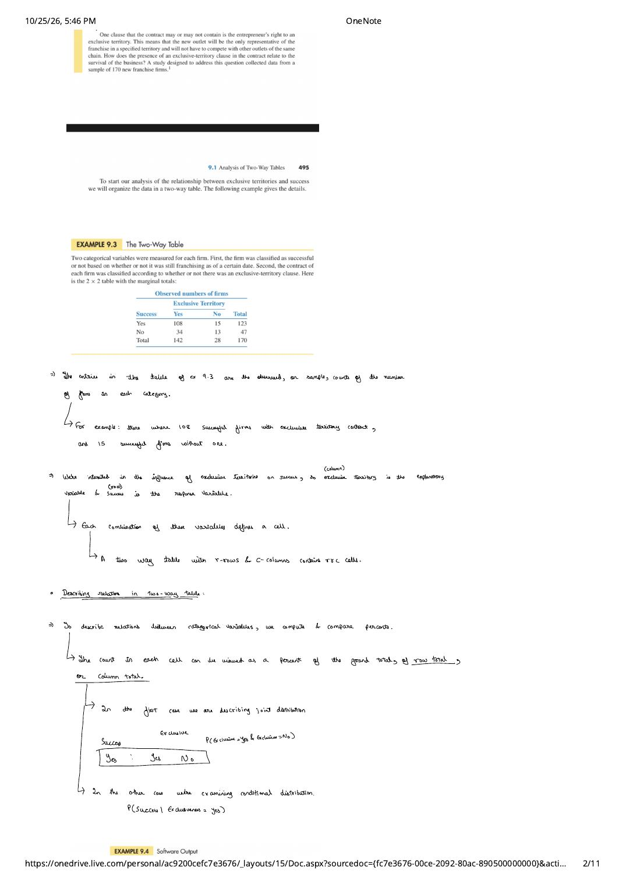
2. The Null Hypothesis of No Association & Expected Cell Counts
In Case 9.1, $76\%$ of exclusive-territory franchises succeeded versus $54\%$ of non-exclusive franchises. Could a $22$-percentage-point difference arise simply from random sampling variation (since only $28$ firms lacked an exclusive territory), or does it reflect a true relationship in the population?
Hypotheses for an $r \times c$ Two-Way Table
- Null Hypothesis ($H_0$): There is no association between the row variable and the column variable (equivalently, the $c$ population distributions of the row variable are identical across all columns).
- Alternative Hypothesis ($H_a$): There is an association (some relationship) between the row variable and the column variable (the $c$ population distributions are not all the same).
Notice that for a general $r \times c$ table, $H_a$ does not specify a single direction ("one-sided" or "two-sided") because there are many ways in which $c$ distributions across $r$ categories can differ from one another.
Deriving the Expected Cell Count Formula
To test $H_0$, we compare the observed cell counts in our sample table against the expected cell counts that would occur on average if $H_0$ (no association) were true. How do we find the expected count for a cell?
Follow the reasoning of Example 9.5 on the franchise table:
- Across the entire sample of $n = 170$ firms, $123$ succeeded, so the overall marginal proportion of successful firms is: $$\hat{p}_{\text{success}} = \frac{\text{row total}}{n} = \frac{123}{170} = 0.72353 \quad (72.35\%)$$
- If $H_0$ is true (exclusive territory has no effect on success), we expect that same proportion $\frac{123}{170}$ to apply equally to the $142$ exclusive-territory firms and the $28$ non-exclusive firms.
- Therefore, the expected number of successful firms with an exclusive territory (Row 1, Column 1) is: $$\text{Expected Count}_{1,1} = \left(\frac{123}{170}\right) \times 142 = \frac{123 \times 142}{170} = 102.74$$
Expected Cell Counts in a Two-Way Table
When the null hypothesis $H_0$ of no association is true, the expected count in any cell $(i, j)$ of a two-way table with grand total $n$ is:
Although observed cell counts are always whole numbers, expected cell counts are long-run averages under $H_0$ and should not be rounded to integers. Furthermore, in any row or column, the sum of the expected counts equals the marginal row or column total!
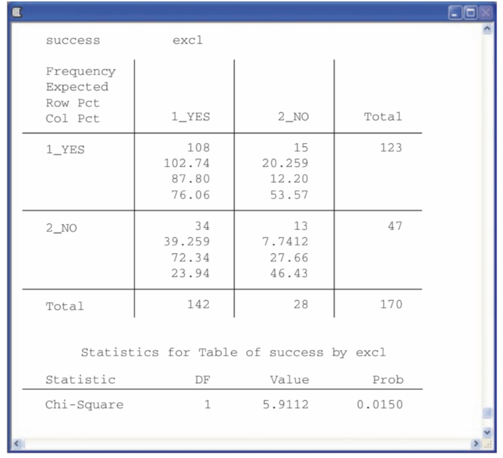
PROC FREQ Output (Example 9.5 & 9.6): For each cell, SAS prints the observed count (top), expected count under $H_0$ ($102.74, 20.259, 39.259, 7.7412$), row percent, and column percent, followed by the Chi-Square statistic $X^2 = 5.9112$ ($\text{df} = 1, P = 0.0150$).
View Original Handwritten Notes — Pages 4 & 5 (Hypotheses & Expected Cell Count Derivation)
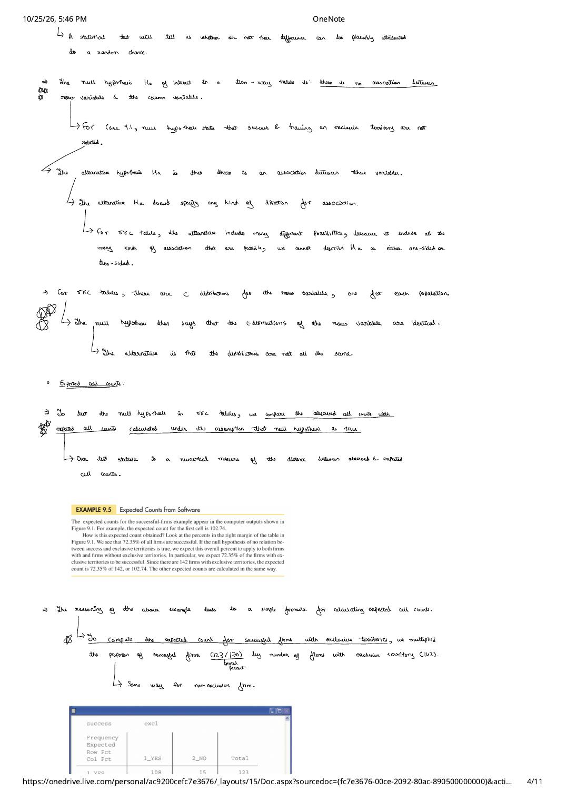
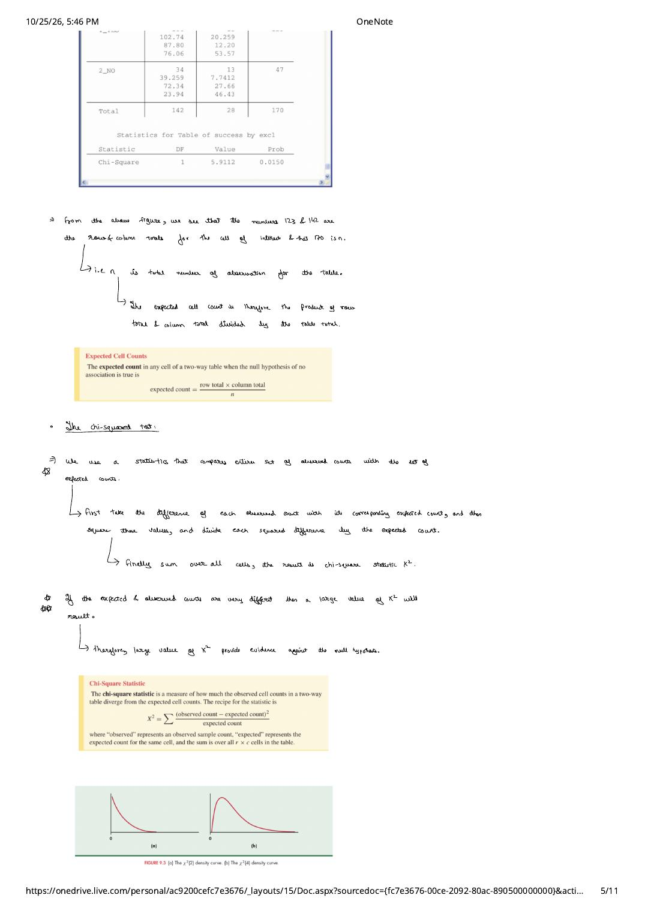
3. The Chi-Square ($\chi^2$) Test, $X^2 = z^2$ Equivalence & Meta-Analysis
To summarize how far all $r \times c$ observed counts diverge from their expected counts in a single number, Karl Pearson introduced the chi-square statistic $X^2$:
The Chi-Square Statistic ($X^2$) & Chi-Square Test for Two-Way Tables
- Sampling Distribution under $H_0$: If $H_0$ is true and sample counts are sufficiently large, $X^2$ has approximately the $\chi^2(\text{df})$ distribution with $\text{df} = (r - 1)(c - 1)$ degrees of freedom, where $r$ is the number of rows and $c$ is the number of columns.
- Always an Upper-Tail $P$-Value: Because every difference $(\text{observed} - \text{expected})$ is squared, any deviation from $H_0$ in any cell makes $X^2$ larger. Therefore, the $\chi^2$ test is always an upper-tail test: $$P\text{-value} = P(\chi^2 \ge X^2)$$
- Sample-Size Rule of Thumb (Cell Count Condition): You can safely use the $\chi^2$ test when the average of the expected counts is $5$ or more and the smallest expected count is $1$ or more (for a $2 \times 2$ table, all four expected counts should be at least $5$).
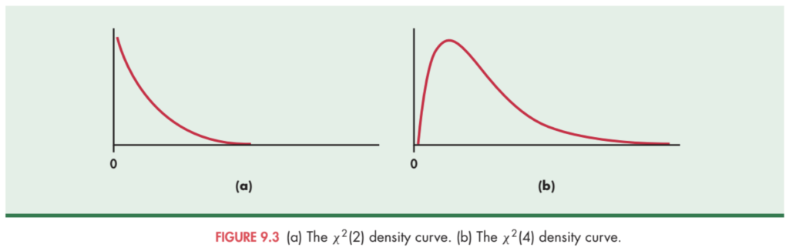
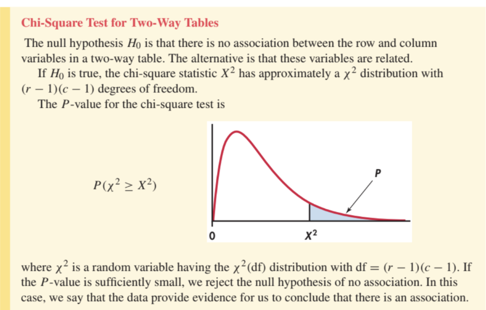
= X^2)">Worked Example 9.6: Chi-Square Test for Franchise Exclusive Territories ($2 \times 2$)
For the $2 \times 2$ franchise table of Case 9.1, all four expected counts ($102.74, 20.26, 39.26, 7.74$) are greater than $5$, and the degrees of freedom are $\text{df} = (2 - 1)(2 - 1) = 1$. Summing over the four cells:
There is clear evidence ($X^2 = 5.91, P = 0.015$) against the null hypothesis of no association. Inspecting the column percents ($76\%$ vs. $54\%$) tells us the direction of the effect: franchises with exclusive territories are significantly more likely to succeed.
Exact Equivalence of the $2 \times 2$ Chi-Square Test and the Two-Sample $z$ Test
For a $2 \times 2$ table, we now have two ways to test whether two population proportions are equal ($H_0: p_1 = p_2$): the pooled two-sample $z$ test from Chapter 8 and the $\chi^2(1)$ test from Chapter 9. How do they compare?
Theorem: $X^2 = z^2$ for Any $2 \times 2$ Table
For any $2 \times 2$ contingency table, the chi-square statistic $X^2$ is algebraically equal to the square of the pooled two-sample $z$ statistic, and the $\chi^2(1)$ critical values equal the squares of the corresponding $N(0, 1)$ critical values:
For instance, in Example 8.8 ("No Sweat" garment labels), we found $z = 3.300 \implies z^2 = (3.300)^2 = 10.89 = X^2$, and both give the exact same two-sided $P$-value $P = 0.0009$!
- When to prefer the $z$ test: You want to test a one-sided alternative ($H_a: p_1 > p_2$ or $p_1 < p_2$) or accompany your test with a confidence interval for $p_1 - p_2$.
- When to prefer the $\chi^2$ test: You want to compare more than two populations or categorical variables with more than two outcome categories ($r \times c$ tables of any size).
Beyond the Basics: Meta-Analysis (Combining Multiple Two-Way Tables)
When policymakers or medical researchers evaluate a treatment across many independent clinical trials—some showing large significant effects and others showing smaller effects—how do they combine the evidence into a single rigorous conclusion? Meta-analysis is a collection of statistical techniques that computes a summary measure of effect (such as Relative Risk) for each individual study and combines them via a precision-weighted average.
Worked Example 9.7: Vitamin A Supplementation Saves Young Children's Lives
A large randomized field trial in Aceh Province, Indonesia enrolled $n = 25{,}200$ young children (aged 1–6) and assigned roughly half to receive Vitamin A supplements and half to serve as controls. One year later, mortality counts were recorded in a $2 \times 2$ table:
| Outcome | Vitamin A Group | Control Group |
|---|---|---|
| Dead | $101$ ($0.00777$, or $7.7$ per $1000$) | $130$ ($0.01065$, or $10.6$ per $1000$) |
| Alive | $12{,}890$ | $12{,}079$ |
| Total | $12{,}991$ | $12{,}209$ |
In the Aceh study, the relative risk of death in the Vitamin A group compared to Control was:
Seven additional field trials were conducted across developing nations. Across all 8 studies, the individual relative risks were:
A meta-analysis combining all 8 two-way tables produced a weighted summary estimate of $RR = 0.77$ with a $95\%$ confidence interval of $(0.68, \; 0.88)$. Because $RR = 1.00$ lies well outside this interval, Vitamin A supplementation decisively reduces child mortality to $77\%$ of the untreated rate (a $23\%$ reduction in deaths).
View Original Handwritten Notes — Pages 6 & 8 ($\chi^2$ vs. $z$ Test & Conditional Distributions in $3 \times 3$ Tables)
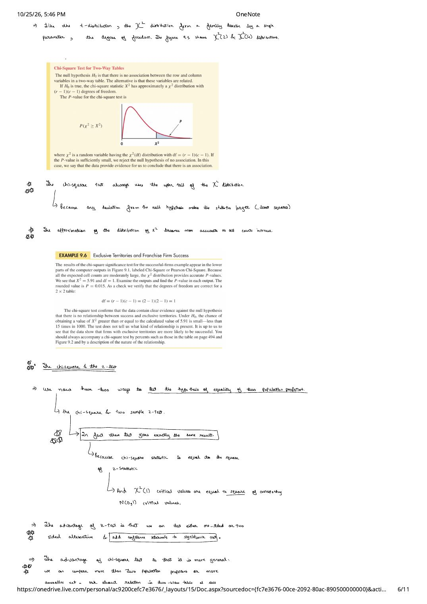
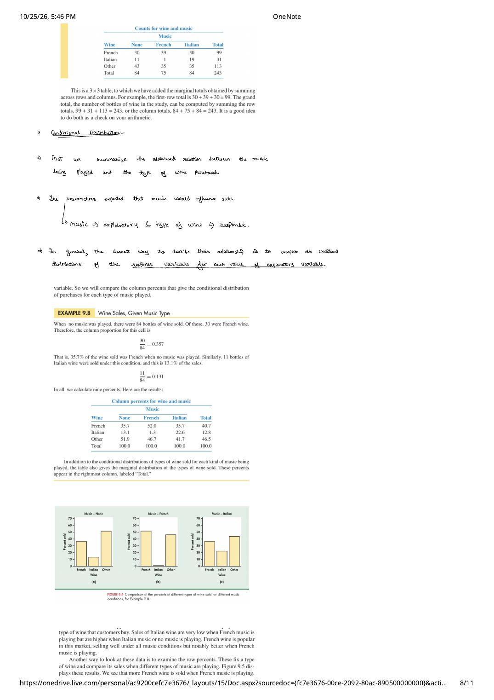
4. Complete $3 \times 3$ Analysis Workflow & Statistical Models for Two-Way Tables
Analyzing any $r \times c$ two-way table follows a four-step workflow:
- Compute descriptive conditional percentages (usually column or row percents) that show the nature and direction of the relationship.
- Compute the expected cell counts $\frac{\text{row total} \times \text{column total}}{n}$ and verify the cell-count condition, then sum $\frac{(\text{observed} - \text{expected})^2}{\text{expected}}$ across all $r \times c$ cells to obtain $X^2$.
- Find the $P$-value from the upper tail of $\chi^2\big((r - 1)(c - 1)\big)$.
- State a substantive conclusion combining the $P$-value with a clear description of the conditional percentage pattern.
Case 9.2 (Examples 9.8 & 9.9): Background Music and Wine Purchases ($3 \times 3$ Table)
Market researchers in a Northern Ireland supermarket tested whether background music influences consumer purchasing behavior by playing three treatments—No music, French accordion music, and Italian string music—and recording the number of bottles of French, Italian, and Other wine purchased ($n = 243$ bottles total):
| Wine Purchased (Row) | Music: None | Music: French | Music: Italian | Row Total (Marginal %) |
|---|---|---|---|---|
| French Wine | $30$ (Exp: $34.222$ | $35.7\%$) | $39$ (Exp: $30.556$ | $52.0\%$) | $30$ (Exp: $34.222$ | $35.7\%$) | $99$ ($40.7\%$) |
| Italian Wine | $11$ (Exp: $10.716$ | $13.1\%$) | $1$ (Exp: $9.568$ | $1.3\%$) | $19$ (Exp: $10.716$ | $22.6\%$) | $31$ ($12.8\%$) |
| Other Wine | $43$ (Exp: $39.062$ | $51.2\%$) | $35$ (Exp: $34.877$ | $46.7\%$) | $35$ (Exp: $39.062$ | $41.7\%$) | $113$ ($46.5\%$) |
| Column Total | $84$ ($100\%$) | $75$ ($100\%$) | $84$ ($100\%$) | $243$ ($100\%$) |
- Step 1 — Conditional Distributions (Example 9.8): Because Music is the explanatory variable (columns) and Wine Type is the response (rows), we compare column percents (Figure 9.4 below). French wine is popular overall ($40.7\%$), but jumps from $35.7\%$ (under No music or Italian music) to $52.0\%$ when French music plays. Even more dramatically, Italian wine sales plunge to $1.3\%$ ($1$ bottle out of $75$) when French music plays, and surge to $22.6\%$ ($19$ bottles out of $84$) when Italian music plays!
-
Step 2 — Expected Counts & Cell-by-Cell $X^2$ Calculation (Example 9.9): Under $H_0$, the upper-left expected count (French wine, No music) is $\frac{99 \times 84}{243} = 34.222$. All 9 expected counts exceed $5$ (smallest is $9.568$). Summing $\frac{(\text{observed} - \text{expected})^2}{\text{expected}}$ across all 9 cells:
$$\begin{aligned} X^2 &= \frac{(30 - 34.222)^2}{34.222} + \frac{(39 - 30.556)^2}{30.556} + \frac{(30 - 34.222)^2}{34.222} \\ &\quad + \frac{(11 - 10.716)^2}{10.716} + \frac{(1 - 9.568)^2}{9.568} + \frac{(19 - 10.716)^2}{10.716} \\ &\quad + \frac{(43 - 39.062)^2}{39.062} + \frac{(35 - 34.877)^2}{34.877} + \frac{(35 - 39.062)^2}{39.062} \\ &= 0.5209 + 2.3337 + 0.5209 + 0.0075 + \mathbf{7.6724} + \mathbf{6.4038} + 0.3971 + 0.0004 + 0.4223 = \mathbf{18.28} \end{aligned}$$Notice how the two Italian-wine cells under French and Italian music ($7.6724$ and $6.4038$) contribute $14.08$ of the total $18.28$ chi-square statistic!
- Step 3 — Degrees of Freedom & $P$-Value: With $r = 3$ rows and $c = 3$ columns, $\text{df} = (3 - 1)(3 - 1) = 4$. In the $\text{df} = 4$ row of the $\chi^2$ table, $X^2 = 18.28$ lies between the $p = 0.0025$ critical value ($16.42$) and the $p = 0.001$ critical value ($18.47$), giving $0.001 < P < 0.0025$ (exact $P = 0.00109$). There is very strong evidence that background music influences the type of wine customers purchase.
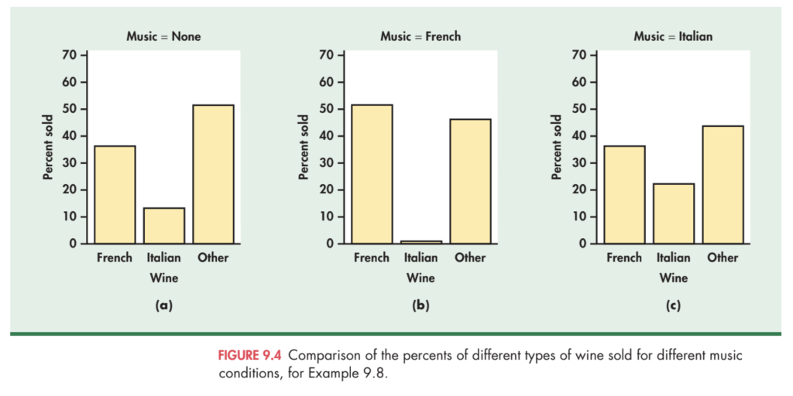
Two Statistical Models for Two-Way Tables: Homogeneity vs. Independence
Remarkably, the exact same $\chi^2$ test procedure applies to two fundamentally different data-collection designs:
| Feature | Model 1: Comparing Several Populations (Test of Homogeneity) | Model 2: Testing Independence |
|---|---|---|
| Sampling Design | Select $c$ independent SRSs of predetermined sizes $n_1, n_2, \dots, n_c$, one from each of $c$ populations (or treatment conditions), and classify each observation according to a single categorical response variable with $r$ categories. | Select a single SRS of size $n$ from a single population and measure two categorical variables ($r$ categories and $c$ categories) on each individual. |
| Null Hypothesis $H_0$ | The distribution of the response variable is the same in all $c$ populations. | The row variable and the column variable are statistically independent in the population ($P(R_i \cap C_j) = P(R_i)P(C_j)$). |
| Prototype Case Study | Case 9.2 (Music & Wine Sales, Example 9.10): Three separate samples of sizes $84, 75,$ and $84$ under three music conditions, comparing the proportions of French, Italian, and Other wine sold. | Case 9.1 (Franchise Exclusive Territories, Example 9.11): A single sample of $n = 170$ newly established franchise firms, each classified by both Exclusive territory? (Yes/No) and Firm successful? (Yes/No). |
| Test Statistic & $\text{df}$ | $X^2 = \sum \frac{(\text{obs} - \text{exp})^2}{\text{exp}}$ with $\text{df} = (r - 1)(c - 1)$ | $X^2 = \sum \frac{(\text{obs} - \text{exp})^2}{\text{exp}}$ with $\text{df} = (r - 1)(c - 1)$ |
View Original Handwritten Notes — Pages 9 & 10 (9-Cell $X^2$ Calculation & The Two Models)
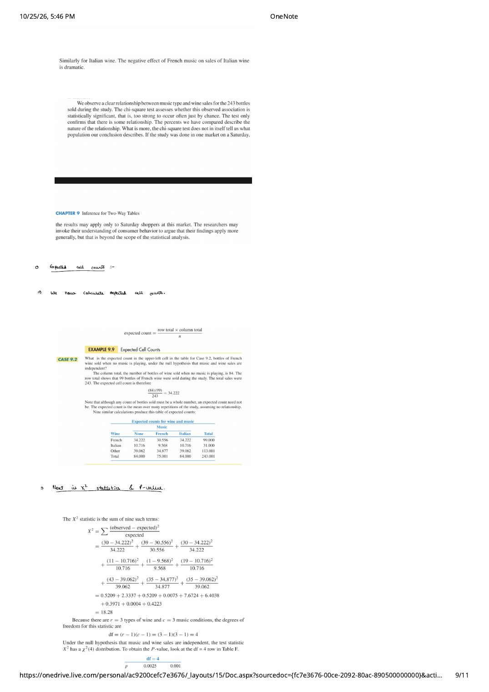
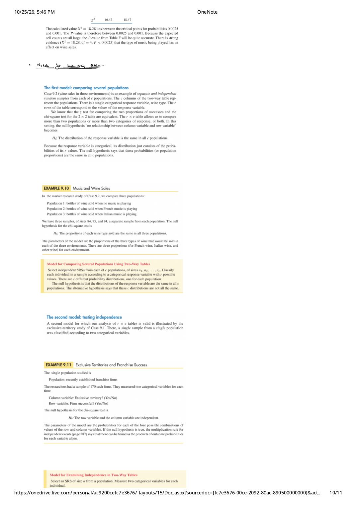